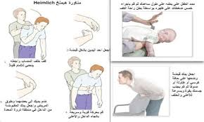

😵 الإسعافات الأولية للاختناق
تعلم كيفية مساعدة شخص يختنق
📋 ما هو الاختناق؟
الاختناق يحدث عندما يعلق جسم غريب في الحلق أو القصبة الهوائية، مما يمنع مرور الهواء إلى الرئتين.
🆘 خطوات الإسعافات الأولية للاختناق:
- 🗣️ اسأل الشخص: "هل تختنق؟" إذا كان يستطيع الكلام، شجعه على السعال
- 👋 اصفق على الظهر 5 مرات بين لوحي الكتفين
- 🤜 اضغط على البطن 5 مرات (مناورة هيمليك)
- 🔄 كرر الخطوات حتى يخرج الجسم الغريب
- 📞 اطلب المساعدة الطبية إذا استمر الاختناق
🎬 فيديوهات تعليمية
فيديو التعامل مع الاختناق
🖼️ صور توضيحية

خطوات اسعاف الاختناق
🚨 علامات الاختناق
- 🤐 عدم القدرة على الكلام أو الصراخ
- 🤭 الإمساك بالحلق بكلتي اليدين
- 😳 تغير لون الوجه إلى الأزرق أو الأحمر
- 😫 صعوبة في التنفس أو صوت صفير
- 💤 فقدان الوعي في الحالات الشديدة
💡 نصائح مهمة
✅ تعلم مناورة هيمليك: هذه الطريقة يمكن أن تنقذ حياة شخص
✅ اطلب المساعدة دائماً: لا تتردد في طلب المساعدة من الكبار
✅ امضغ الطعام جيداً: الوقاية خير من العلاج
✅ لا تأكل وتلعب في نفس الوقت: هذا يزيد خطر الاختناق